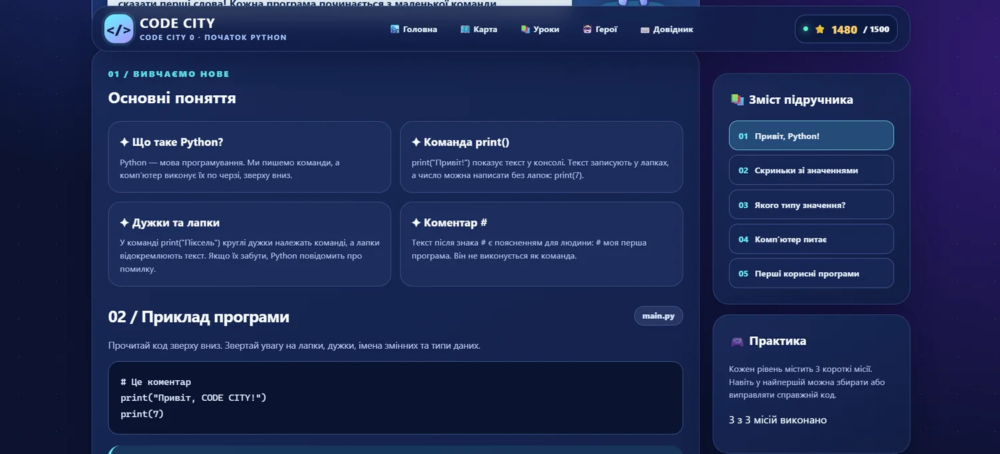
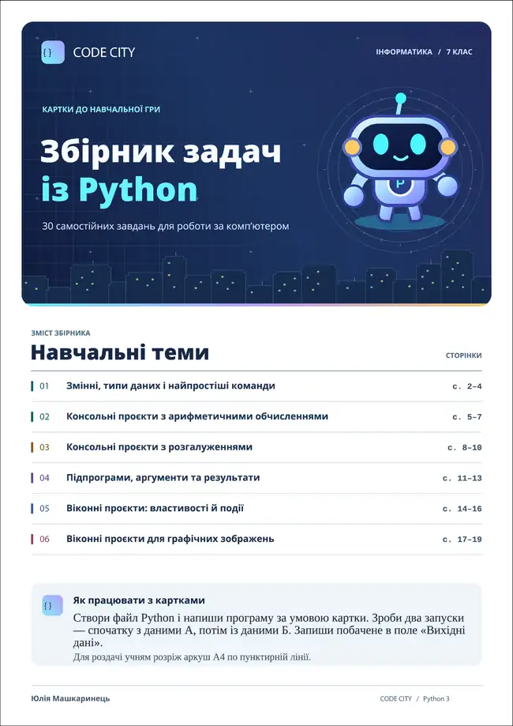

Пояснити нове просто
Для учнів змінні, розгалуження або функції спочатку звучать складно. Допомагають приклади, короткі пояснення та демонстрації.
CODE CITY — готові інтерактивні уроки Python для 7 класу: теорія з поясненнями, практичні завдання та навчальні ігри в одному комплексі. Учням легше зрозуміти код, а вчителю — організувати урок без підготовки матеріалів із нуля.
Учителю потрібні зрозумілі пояснення, різні вправи й можливість перевірити не лише правильну відповідь, а й сам програмний код.
Для учнів змінні, розгалуження або функції спочатку звучать складно. Допомагають приклади, короткі пояснення та демонстрації.
Самих тестів замало. Потрібно складати код, шукати помилки, розв'язувати ситуаційні задачі та бачити результат.
Окремі презентації, завдання, контрольні та проєкти забирають години. У CODE CITY їх об’єднано в одну систему.

Матеріал невеликими кроками, приклади й підказки Пікселя.
Теорія, практика й оцінювання зібрані разом.
Кожна гра відкривається незалежно від попередніх.
Кожна тема має 15 інтерактивних місій і відповідає навчальним темам розділу програмування Python у 7 класі.
print(), input(), присвоювання, int, float, str, bool та перші програми.
Переглянути тему ↗Введення даних, обчислення, задачі з реального життя.
Переглянути тему ↗if, elif, else та умови, які допомагають програмі приймати рішення.
Переглянути тему ↗Власні функції, параметри, аргументи, return.
Переглянути тему ↗Tkinter, обробники подій, властивості вікна та реакція на дії.
Переглянути тему ↗Canvas, координати, кольори, графічні фігури та творчі завдання.
Переглянути тему ↗12 різнорівневих завдань з усіх тем.
5 рівноцінних проєктів на вибір: план, код, тестування, захист.
Окремі сторінки за темами Python, з теорією, прикладами та орієнтирами для уроків інформатики 7 класу.
Гортайте скриншоти: карта тем, теорія, програмування, підсумкова контрольна, проєкти та інструкція для вчителя.
Навчальна система CODE CITY
Гортайте стрілками чи свайпом; натисніть на великий скриншот, щоб збільшити.
Відеоогляд показує навігацію між темами, теорію, інтерактивні завдання та перевірку коду. Побачте комплекс ще до придбання.
Переглянути комплект ↗Відеоогляд CODE CITY

Кожен, хто придбає навчальний комплекс CODE CITY для 7 класу, отримає збірник із 30 самостійних задач для практичної роботи за комп’ютером.

Один ZIP-архів із матеріалами для вивчення Python у 7 класі. Після завантаження уроки, ігри й завдання працюють без інтернету.
Автоматичне отримання: після підтвердженої оплати на електронну пошту надсилається посилання Google Диска із ZIP-архівом.
Вартість повного навчального комплексу
Оплата захищеною сторінкою WayForPay. Перед підтвердженням перевірте підсумкову суму.
Перед придбанням ознайомтеся з офертою, умовами отримання та поверненням коштів.
Для інтерактивних місій додаткове встановлення не потрібне. У грі використовується навчальний емулятор підтримуваних команд Python і tkinter — це не повноцінний інтерпретатор Python.
Так. Кожна тема запускається окремо відповідно до календарного планування, тому учням не потрібно проходити всі попередні ігри.
WayForPay надсилає електронний лист із посиланням на Google Диск. Завантажте ZIP-архів, розпакуйте його та відкрийте головний HTML-файл.
Так, після завантаження архіву на комп’ютер. Усі файли продукту потрібно зберігати разом.
Так, у власній педагогічній діяльності. Перепродаж та публічне поширення архіву заборонені, крім випадків, передбачених законодавством.
Напишіть на studentffmi@gmail.com або зателефонуйте +380 67 106 98 75. Звернення опрацьовуються щодня 10:00–17:00.
Для кожної теми є окрема сторінка з поясненнями, прикладами та навчальними завданнями. Це допомагає знайти матеріали відповідно до уроків інформатики 7 класу.